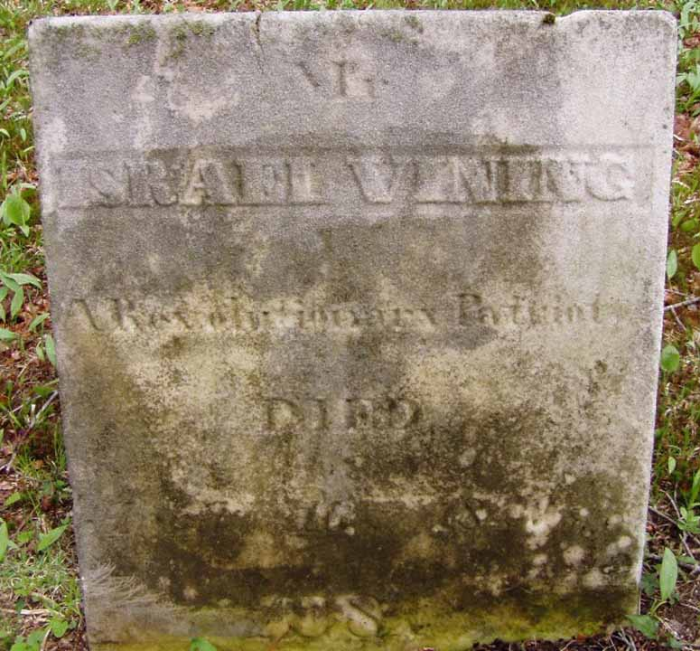
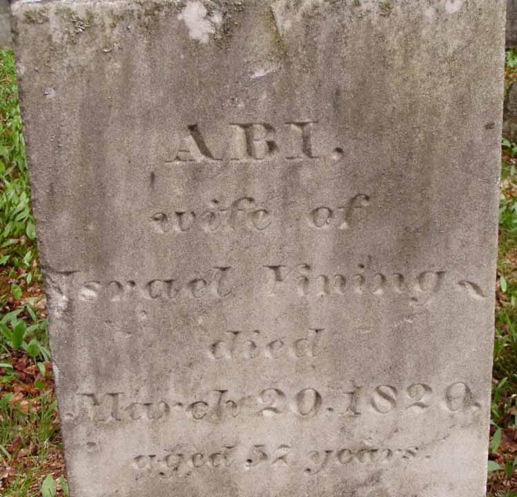

Census Data
| 1790 | 1800 | 1810 | 1820 | 1830 | 1840 | |
| Israel Vining | M 16 and upward | M 26–45 | ? | M 45 and older | ? | dead |
| Abia (Dunbar) Vining | F | F 26–45 | ? | dead | ||
| Leavitt Vining | M under 16 | M 10–16 | married and living in separate household | |||
| Polly Vining | F | F 10–16 | ? | married and living in separate household | ||
| Jacob Vining | dead | |||||
| Ansel Vining | M under 16 | dead | ||||
| Eunice Vining | F under 10 | ? | not living in this household | ? | ? | |
| Elisha Vining | dead | |||||
| Joseph Vining | M under 10 | ? | [see note below[ | ? | ? | |
| Israel Vining Jr. | dead | |||||
| Ansel Vining | M under 10 | ? | [see note below] | ? | ? | |
| Israel Royal Vining | ? | [see note below] | married and living in separate household | |||
| Cullen Vining | ? | [see note below] | ? | ? | ||
| Mariah Vining | ? | F 10–16 | married and living in separate household |
Death Data
Gravestones for Israel Vining and Abia (Dunbar) Vining, in Bush Cemetery, Windsor, Berkshire County, Massachusetts (Source: Find A Grave):
